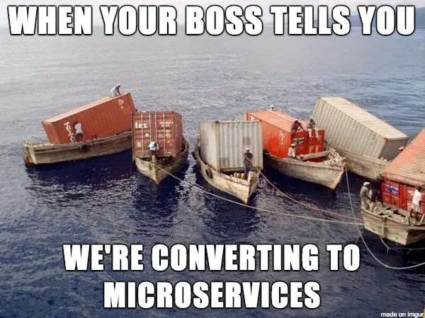
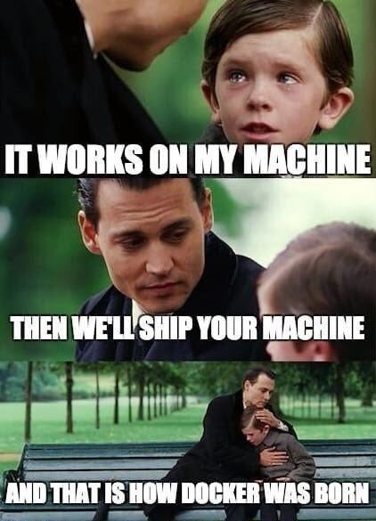

<div style="text-align: center">  </div> --- # Containers - Like a VM? <!-- .element: class="fragment" --> - Filesystem <!-- .element: class="fragment" --> - Hostname <!-- .element: class="fragment" --> - Network <!-- .element: class="fragment" --> - Users <!-- .element: class="fragment" --> - Processes <!-- .element: class="fragment" --> - Clock (uptime) <!-- .element: class="fragment" --> - Limiting CPU, Memory, Net, ...<!-- .element: class="fragment" --> - Just a folder? <!-- .element: class="fragment" --> <aside class="notes"> <pre><code> docker run -it --rm debian:11 cat /etc/os-release hostname hostname -I whoami sleep infinity ps aux | grep infini docker ps --format '{{ .ID }}' | xargs docker inspect | jq -r '.[].GraphDriver.Data.LowerDir' </code></pre> </aside> --- ## Kernel vs Userspace --- ## Busybox ```sh sudo apt install busybox-static ``` ```sh mkdir -p minimal cp `which busybox` minimal/ sudo chroot minimal/ /busybox sh ``` --- <div style="text-align: center">  </div> <p style="text-align: center">Container vs Image</p> --- ## Images ```shell tar -C minimal -c . -f minimal-image.tar docker import minimal-image.tar krabbusybox docker run --rm -it mybusybox /busybox sh ``` #### + Metadata - Which program to run - Which architecture is it good for - ... --- ## How do containers work? - _System call_ `unshare` - `/usr/bin/unshare` - `pivot_root` (`chroot`) - Filesystem with snapshot support - btrfs, zfs - **overlay** - CGroups - `/sys/fs/cgroup/` --- ## Chroot Bootstrap your own debian: ```sh sudo debootstrap \ --variant=minbase \ stable my-debian \ http://deb.debian.org/debian/ sudo chown $UID:$GID my-debian -R sudo chroot my-ubuntu bash ``` --- ## Chroot Or Ubuntu: ```sh sudo debootstrap \ --variant=minbase \ jammy my-ubuntu \ http://archive.ubuntu.com/ubuntu/ sudo chown $UID:$GID my-ubuntu -R sudo chroot my-ubuntu bash ``` --- ## Chroot Or a minimal distro: ```sh sudo apt install busybox-static ``` ```sh mkdir -p minimal cp `which busybox` minimal/ sudo chroot minimal/ /busybox sh ``` --- ## Look Ma! ### No Linux in my container! ```shell root@krab-monitora:/# ls -a /boot . .. ``` vs. ```shell $ ls -al /boot total 415412 drwxr-xr-x 5 root root 4096 bře 8 10:03 . drwxr-xr-x 22 root root 4096 bře 1 12:44 .. -rw-r--r-- 1 root root 261948 úno 22 15:01 config-5.15.0-67-generic -rw-r--r-- 1 root root 269885 led 30 16:44 config-5.19.0-32-generic -rw-r--r-- 1 root root 270020 úno 17 15:31 config-5.19.0-35-generic drwx------ 3 root root 4096 led 1 1970 efi drwxr-xr-x 5 root root 4096 bře 6 09:16 grub lrwxrwxrwx 1 root root 28 bře 6 09:15 initrd.img -> initrd.img-5.15.0-67-generic -rw-r--r-- 1 root root 115552485 bře 6 09:15 initrd.img-5.15.0-67-generic -rw-r--r-- 1 root root 126552765 úno 27 10:55 initrd.img-5.19.0-32-generic -rw-r--r-- 1 root root 126811238 bře 8 10:03 initrd.img-5.19.0-35-generic lrwxrwxrwx 1 root root 28 bře 6 09:15 initrd.img.old -> initrd.img-5.19.0-35-generic drwx------ 2 root root 16384 lis 13 2021 lost+found -rw-r--r-- 1 root root 182800 úno 6 2022 memtest86+.bin -rw-r--r-- 1 root root 184476 úno 6 2022 memtest86+.elf -rw-r--r-- 1 root root 184980 úno 6 2022 memtest86+_multiboot.bin -rw------- 1 root root 6254553 úno 22 15:01 System.map-5.15.0-67-generic -rw------- 1 root root 6429633 led 30 16:44 System.map-5.19.0-32-generic -rw------- 1 root root 6430111 úno 17 15:31 System.map-5.19.0-35-generic lrwxrwxrwx 1 root root 25 bře 6 09:15 vmlinuz -> vmlinuz-5.15.0-67-generic -rw------- 1 root root 11559080 úno 22 15:03 vmlinuz-5.15.0-67-generic -rw------- 1 root root 12186376 led 30 16:46 vmlinuz-5.19.0-32-generic -rw------- 1 root root 12187720 úno 17 15:33 vmlinuz-5.19.0-35-generic lrwxrwxrwx 1 root root 25 bře 6 09:15 vmlinuz.old -> vmlinuz-5.19.0-35-generic ``` --- ## Unknown user? ```shell root@krab-monitora:/# ls -l /usr/bin/ls -rwxr-xr-x 1 1000 1000 138208 Feb 7 2022 /usr/bin/ls ``` Tell it about a user: ```shell root@krab-monitora:/# echo krabiii:x:1000:1000:krabiii:/home:/usr/bin/bash \ > /etc/passwd root@krab-monitora:/# ls /usr/bin/ls -l -rwxr-xr-x 1 krabiii 1000 138208 Feb 7 2022 /usr/bin/ls ``` Remapping: ```shell $ unshare -r chroot my-ubuntu bash root@krab-monitora:/# ls -l /usr/bin/ls -rwxr-xr-x 1 root root 138208 Feb 7 2022 /usr/bin/ls ``` --- ## Processes Try this (in minimal): ```shell # ps PID USER COMMAND ps: can't open '/proc': No such file or directory ``` In Ubuntu: ```shell root@krab-monitora:/# ps Error, do this: mount -t proc proc /proc root@krab-monitora:/# ls -a /proc/ . .. ``` <h2 style="text-align:center"> 😱 </h2> --- ## Can we be PID 1? ```shell $ sudo unshare --pid --mount-proc --fork root@krab-monitora:/home/krab/workspace/containers/work# ps PID TTY TIME CMD 1 pts/3 00:00:00 bash 14 pts/3 00:00:00 ps ``` PID + Chroot together: ```shell sudo unshare --pid --fork chroot my-ubuntu bash ``` --- ## Networks Not going to cover them here. See [a tutorial](https://aly.arriqaaq.com/linux-networking-bridge-iptables-and-docker/). <div class="fragment"> You'll need: - A network namespace - Virtual eth interface of type peer (a pair) - Move one peer into the namespace - (usually) A bridge interface to connect elsewhere (`docker0`) </div> --- ## Networks The Docker way to tweak manually: ```sh CONTAINER=$(docker run ...) docker network create $NETWORK docker network connect $NETWORK $CONTAINER ``` --- ## Layers Optimization for big images - only changes We'll try using Overlay FS. <div style="text-align: center"> <img src="img/layers.jpg"> </div> --- ## OverlayFS ```shell mkdir minimal-work minimal-changes minimal-merged sudo mount -t overlay overlay \ -olowerdir=minimal,upperdir=minimal-changes,workdir=minimal-work \ minimal-merged ``` Lower dir = base image \ Upper dir = stores our changes \ Work dir = ¯\\_(ツ)_/¯ We work in **`minimal-merged`** --- ## Layers chaining ```shell mkdir minimal-work2 minimal-changes2 minimal-merged2 sudo mount -t overlay overlay \ -olowerdir=minimal-merged,upperdir=minimal-changes2,workdir=minimal-work2 \ minimal-merged2 ``` - `tar` layers together. - Add metadata to order them. - Voilà, multilayer Docker image --- # KOHEU